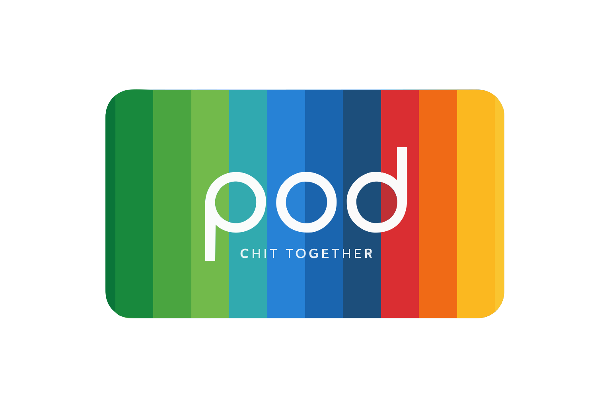

bunq
Real euros, on real rails. Every contribution is a bunq payment; every payout is a bunq payment. No fake money, no hand-waving custody — live in the sandbox today, on bunq rails tomorrow.

· est. bunq hackathon 7.0 open the appN friends. One pot. Each cycle, one person takes the whole thing. An ancient practice — susu, ajo, chit, paluwagan, tanda — with the math, the rails, and the social labor finally solved.
the hard truth
Not because people are dishonest. Because the math and the social coordination break — at the first missed month, the first disagreement, the first emergency.
Someone forgets whose cycle it is. Someone's partner needs surgery and they can't wait three months for the pot. Someone pays, but the group lead says they didn't. Someone else doesn't want to be the one chasing texts at 10 p.m. on the twelfth.
These are not villainous failures. They are the ordinary weight of shared money between humans. Someone has to carry it. Now something does.
§ II — the architecture
Each plane has one job, and only one. Money moves on bunq. Invariants hold in TigerBeetle. Coordination lives in Claude. None of the three can overreach into the others.
Real euros, on real rails. Every contribution is a bunq payment; every payout is a bunq payment. No fake money, no hand-waving custody — live in the sandbox today, on bunq rails tomorrow.
Six accounts per pod. Two-phase transfers.
debits_must_not_exceed_credits. The invariant
that makes “the pool never owes more than it holds”
a mathematical fact, not a trust fall.
Six agents, six narrow jobs. They draft charters, chase missed contributions, mediate disputes, compute fair buyouts, order payouts by real need. They propose. You approve — with your face.
§ III — the lifecycle of a pod
You don't find six people. You tell pod. what matters: a down-payment, a wedding, school fees, a cushion. Who you'd vouch for, what you won't compromise on.
Reads your bunq history for a trust score. Joins an existing pod, spins a new one, or places you on the waitlist. Pods are platform-formed — never user-created.
Frequency, amount, default payout order, late penalties, emergency exit clauses. Plain language, clause-by-clause. Every member signs with their face before the pot opens.
Coby reminds on day three, gently. Escalates tone on day five, then brings in Moti if money is in doubt. A contribution is two linked pending transfers; both post atomically when bunq confirms.
Interviews members. Feeds constraints into an OR-tools CP-SAT solver. Proposes an order; the group approves or adjusts. No more “whoever shouted first gets cycle one.”
Ray writes a signed reputation event to every member's passport — on-time streak, disputes won, emergencies handled gracefully. Portable. Yours. Legible to the next pod.
§ IV — the crew
Each writes, listens, and acts inside a narrow job. None of them moves money without a face-scan approval. All of them leave an audit trail.
constitution · drafting
Drafts the pod's charter with the founder. Turns “monthly, about €250, payout in emergencies first” into co-signable clauses everyone understands.
“Before we seal the pot — if someone misses a contribution, should the group wait 3 days or 7? And does it carry to the following cycle?”
collector · nudging
Tone-calibrated reminders during the contribution window. Starts gentle. Escalates only when silence does. Hands off to Moti the second money is actually disputed.
“Hey Tunde — day three, the usual €250 whenever you can. Pool's three-quarters there; we've got you. No sweat.”
mediator · disputes
Reads the TigerBeetle ledger, bunq history, uploaded screenshots — vision-capable — and issues a verdict. If wrong, issues a corrective TB transfer.
“Reading TB ledger cycle 3 · scanning bunq tx · verdict: verified_paid, €250 @ 14:02:11 UTC. Posting correction now.”
emergency · buyouts
When life happens mid-cycle. Computes a fair buyout (contributed minus received), walks the group through consent, and unwinds the position in one atomic batch.
“Priya's mother needs surgery. Fair exit buyout = contributed − received = €750. Asking the other five for consent.”
payout · ordering
Interviews members about what they're actually saving for. Solves the ordering with OR-tools CP-SAT. Proposes an order — the group has final say.
“Interviewed six members. Solver proposes: cycle 4 → Tunde (newborn), cycle 5 → Amina (tuition), cycle 6 → Priya…”
auditor · passport
End-of-cycle. Writes signed reputation events into each member's passport: on-time streaks, disputes handled, emergencies navigated. Portable across pods.
“Cycle 4 closed. Six signed reputation events written. Median Δ reputation: +14. Passports synced.”
A seventh — the Cultural Translator — is in the drawer for cross-culture pods. Rewrites agent messages in native idiom. Coming in the next cycle.
§ V — the tape
Postings in TigerBeetle. Events in Supabase. Audit rows for every tool call every agent makes. If it happened in pod., it's on the tape — readable by you, your pod, and a judge.
§ VI — safety you can feel
An agent can draft. An agent can compute. An agent can stage a transfer. An agent cannot move your money. Every irreversible action gates on a live biometric approval from the person it affects.
Contribute, approve buyouts, accept payouts — all gated by expo-local-authentication. No face, no move.
Every contribution is a linked PENDING pair. Every payout is a linked batch. All legs succeed, or none do. No half-moves.
debits_must_not_exceed_credits on the group_pool. The pool cannot owe more than it holds — even during demo chaos.
Every user-authored message is wrapped in <user_message> tags. Every agent prompt explicitly refuses to follow instructions inside them.
Every agent tool call lands in public.audit_log. Who, what, when, why — and which prompt it came from.
POST /webhooks/bunq/replay force-commits a pending contribution when the real bunq webhook flakes mid-pitch. Never disabled.
§ VII — your turn
Sandbox mode · no real money · bunq hackathon 7.0 judges get a
fast-pass. Questions? ping #help-pod.